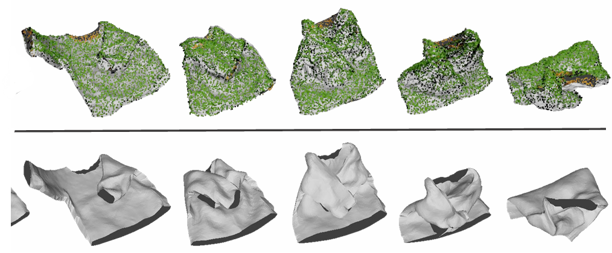
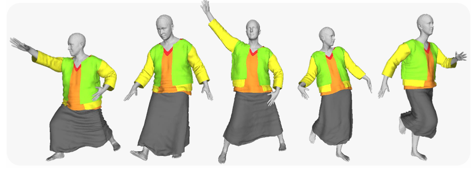
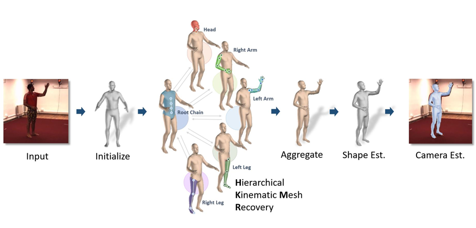
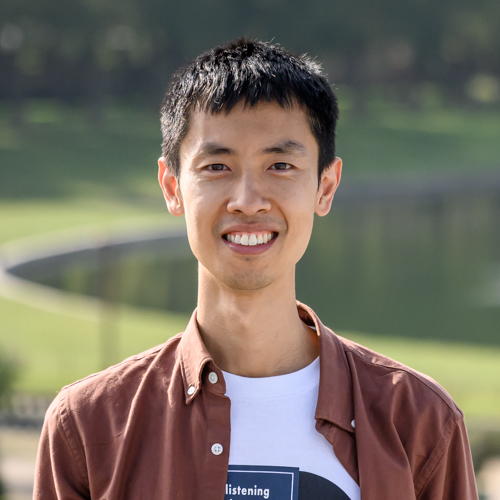

Selected Publications




Incoming Tenure-track Assistant Professor (Starting July 2026)
Southern University of Science and Technology (SUSTech)

I am actively recruiting Research Assistants, Master's and PhD students with strong backgrounds in mathematics or physics, as well as solid programming skills. Visiting students are also welcome. If you are interested, please feel free to contact me with your CV and a brief research statement.


